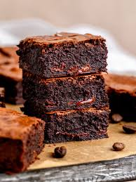

Kthehu te Ballina

- 200g çokollatë e zezë
- 150g gjalpë
- 200g sheqer
- 3 vezë
- 100g miell
- 2 lugë kakao
- 1 lugë çaji pluhur pjekës
- 1 lugë vanilje
- Një majë kripë
- Shkrini çokollatën dhe gjalpin në një enë mbi avull.
- Shtoni sheqerin dhe trazojeni mirë.
- Shtoni vezët një nga një duke i përzier vazhdimisht.
- Përzieni miellin, kakaon, pluhurin për pjekje dhe kripën.
- Shtoni përbërjen e miellit tek masa me çokollatë dhe përziejeni butësisht.
- Hidheni brumin në një tavë të lyer me gjalpë dhe piqeni në 180°C për 25-30 minuta.
- Lëreni të ftohet, priteni në katrorë dhe shijojeni!